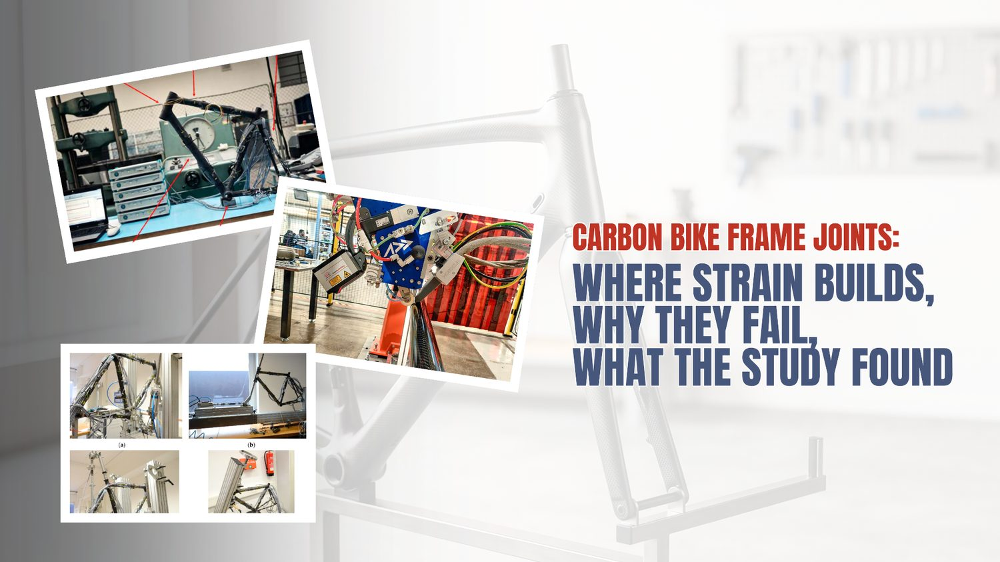
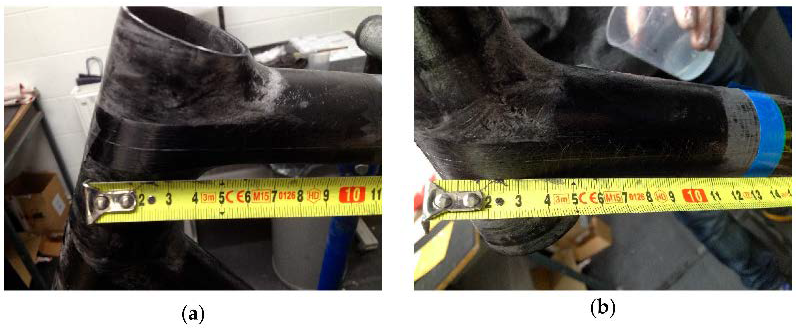
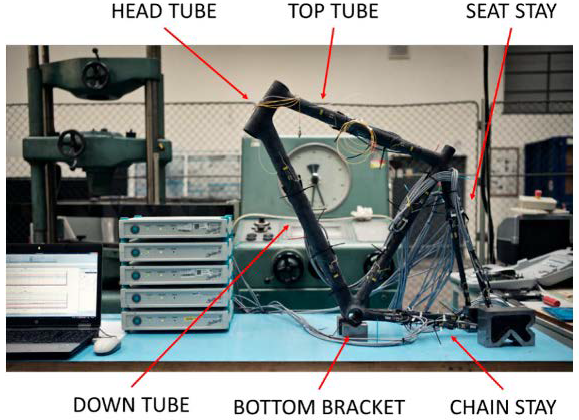
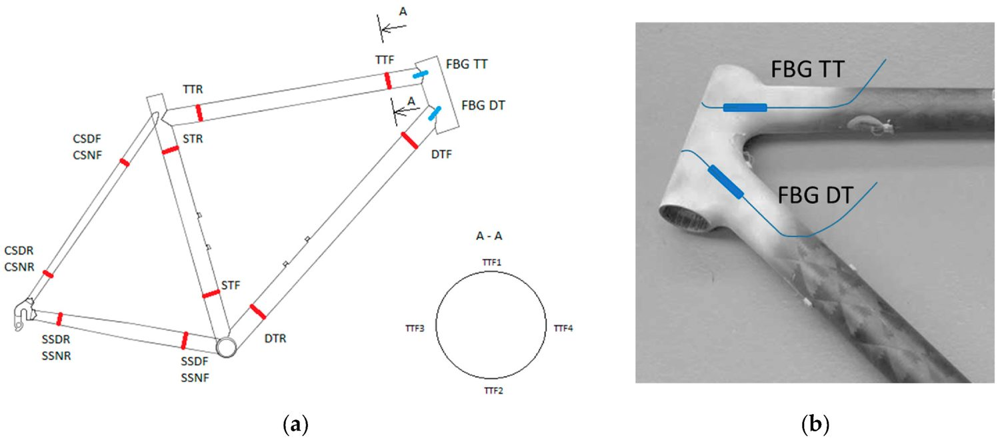
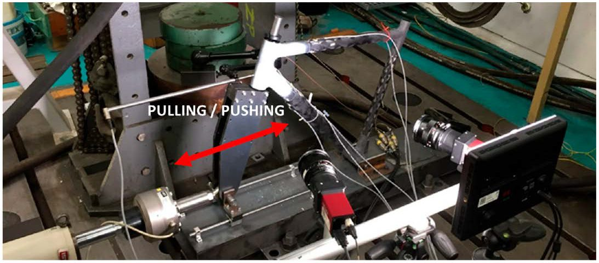
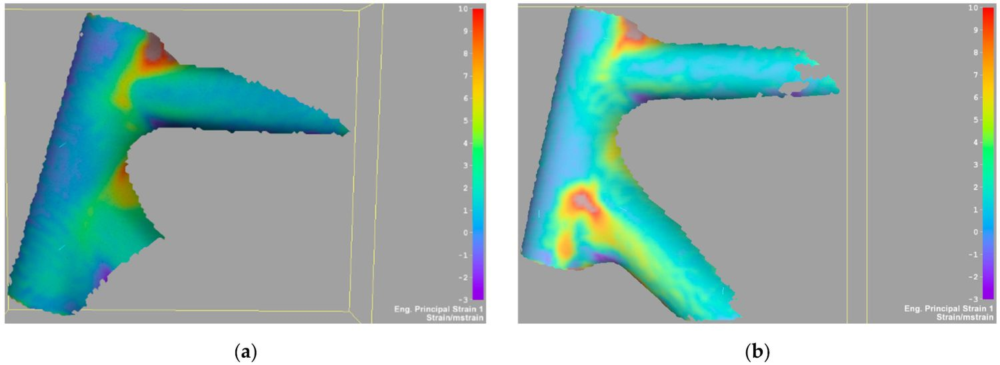
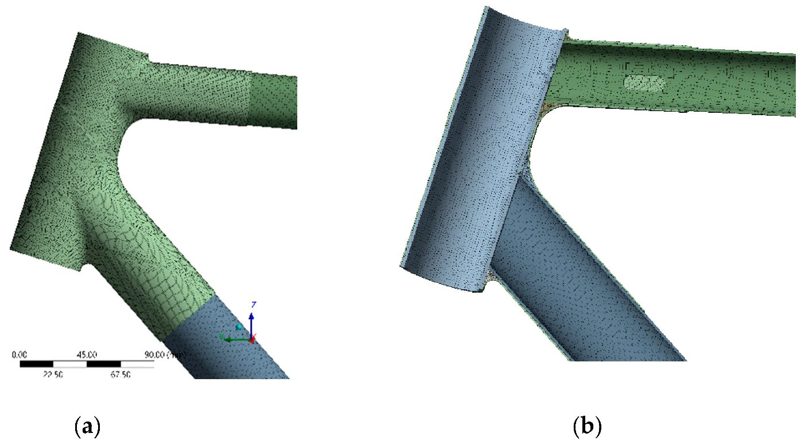
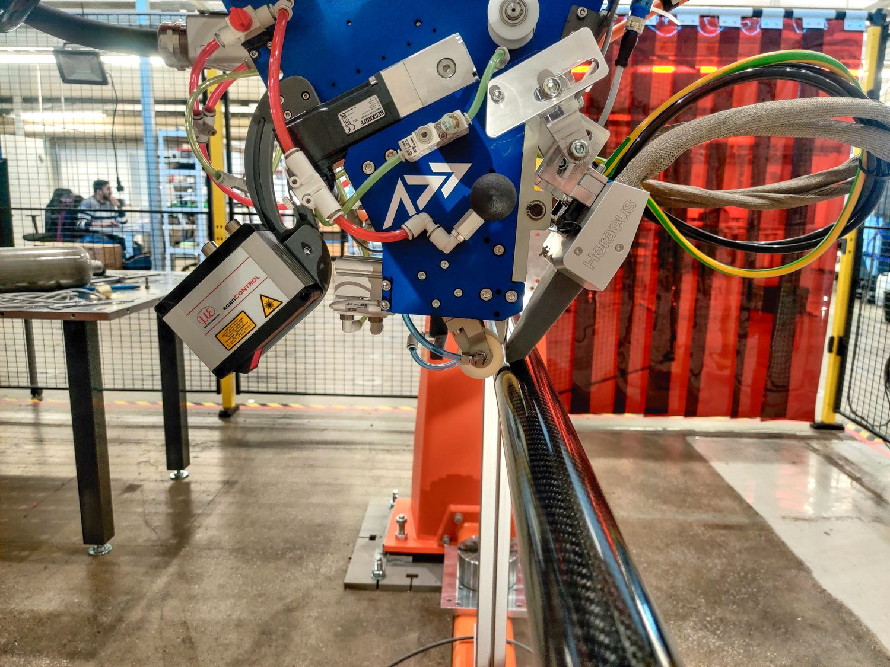

A Carbon Bike Frame's Weakest Point Is the Joint, Not the Tube

A Czech Technical University team embedded fiber optic sensors inside the head tube joint of a composite bicycle frame, then rode it, tested it to failure, and modeled it. Here is what the joint was actually feeling.
Ask most people to guess where a carbon fiber bicycle frame is most likely to fail, and they will point at a tube. It feels intuitive: the tubes are the long, load-carrying spans, so surely they are the parts under the most stress.
A 2022 open-access study in Applied Sciences (MDPI), authored by Milan Dvořák and colleagues at the Czech Technical University in Prague (with Compo Tech PLUS), makes a compelling case that this intuition is backwards. In a frame built from filament-wound composite tubes, the joints where those tubes meet are the critical structural elements — and they carry more strain than the tube surfaces right next to them.
The reason the study can say this with confidence is a measurement choice most frame testing never makes. Instead of relying only on strain gauges glued to the outside of the frame, the researchers embedded fiber Bragg grating (FBG) optical sensors inside the head tube joint during manufacturing, laid directly between the unidirectional carbon plies. That gave them a rare window into what the composite is experiencing at the exact point where hand lamination joins the tubes together.
At Addcomposites, we spend our days on the manufacturing side of exactly this problem: how fiber gets placed at complex tube-to-tube intersections, and whether that placement is repeatable enough to trust. So this paper caught our attention. Below, we walk through what the authors did and what they found, and then — clearly separated from their work — we offer our own perspective on what it means for anyone producing CFRP frames and tubular sports structures.
Carbon composite bicycle frame, front triangle detail. The head tube joints are the frame's critical load-transfer points.
A note on boundaries: everything attributed to “the paper,” “the authors,” or “the study” is the researchers' work. Anything under “Our perspective” is Addcomposites' commentary. The authors did not review, endorse, or validate this article or our products.
The frame, and why its joints are the interesting part
The study looked at a road-frame-scale carbon composite bicycle frame. The load-bearing tubes were produced by filament winding, which lets the manufacturer lay longitudinally oriented fibers and mix material types in a single tube. Here the authors used a hybrid layup pairing two carbon grades — Toray T700 for strength and Tenax UMS40 for stiffness — in a two-component epoxy, reaching a fiber volume fraction of roughly 51–55 percent. The finished frame weighed about 800 g at a 54 cm size.
The tubes themselves are not really the story. The story is how they are connected. According to the paper, the tube-to-tube joints were built up by hand, layering woven carbon fabric with UD carbon tape in epoxy, and a lightweight micro-balloon epoxy filler was used to blend the contours where the tubes meet. The authors are candid that a hand-laid joint like this can be a weak point in the frame's overall strength, and that this needs to be checked experimentally rather than assumed.

The head tube joint during hand lamination, with the optical fiber
(FBG) sensor routed by hand across the joint and taped in position
before the carbon plies close over it: (a) at the
top-tube-to-head-tube joint and (b) at the down-tube-to-head-tube
joint. This manual, build-by-hand step is where the joint the study
identifies as the frame's critical element takes shape.
Figure 3 from: Dvořák, M., Ponižil, T.,
Kulíšek, V., Schmidová, N., Doubrava, K.,
Kropík, B., Růžička, M. “Experimental
Development of Composite Bicycle Frame.”
Applied Sciences 2022, 12, 8377.
https://doi.org/10.3390/app12168377
— © 2022 by the authors. Licensed under CC BY 4.0 (https://creativecommons.org/licenses/by/4.0/).
That single admission frames the entire investigation. If the joint is the suspected weak link, you have to measure the joint itself, not just the tube beside it.
Here is how the frame's front triangle is laid out, and where the two embedded optical sensors went. The two sensors — FBG TT in the top-tube-to-head-tube joint and FBG DT in the down-tube-to-head-tube joint — were placed between the UD carbon layers, which the authors identify as critical for transferring horizontal (front-to-rear) forces.

The complete carbon composite bicycle frame mounted in the test rig,
instrumented with embedded FBG and surface strain sensors, with the
six main structural elements labeled: head tube, top tube, seat stay,
down tube, bottom bracket, and chain stay. This is the fully
assembled frame (specimen 0) run through the standardized ISO load
cases and the ergometer test.
Figure 1 from: Dvořák, M., et al. “Experimental
Development of Composite Bicycle Frame.”
Applied Sciences 2022, 12, 8377.
https://doi.org/10.3390/app12168377
— © 2022 by the authors. Licensed under CC BY 4.0.
That placement is the whole point: a bonded strain gauge has to live on an outer surface — it can't sit down among the plies or within the bondline of a joint — so it reports only what the skin of the part is doing. An embedded FBG can report from inside.
Four measurement methods, one joint
The study did not lean on a single technique. The paper describes a stacked instrumentation approach, with each method covering a blind spot of the others:
- Embedded FBG sensors (two ORMOCER-coated fibers, read by a Safibra FBGuard interrogator, with a stated measurement error of about ±6.1 µm/m) reported strain from inside the joint.
- Resistive strain gauges (350 Ω, 6 mm grid, logged on an HBM Spider8, error about ±6 µm/m) measured strain on the tube surfaces near the joint, and on the back of the head tube.
- Digital image correlation (DIC) — a Dantec Dynamics Q400 system with a resolution near 0.08 mm/px — mapped the full surface strain field around the joint.
- Acoustic emission (AE) — three Dakel piezoelectric sensors at the top tube, head tube, and down tube — listened for the tiny elastic waves released when the composite starts to crack, before that damage shows up in the frame's overall stiffness.

The sensor layout in the head tube area: (a) a schematic of the frame
marking the positions and labels of all the surface-mounted strain
gauges, and (b) a photograph of the head tube joint with the two
embedded FBG optical sensors highlighted in blue — FBG TT
running into the top-tube joint and FBG DT into the down-tube joint.
The FBGs sit inside the joint between the carbon plies, where a
surface gauge cannot reach.
Figure 4 from: Dvořák, M., et al. “Experimental
Development of Composite Bicycle Frame.”
Applied Sciences 2022, 12, 8377.
https://doi.org/10.3390/app12168377
— © 2022 by the authors. Licensed under CC BY 4.0.
Before any of this, the authors ran a baseline tensile test on the hand-laminated UD tape itself, since if that tape breaks the joint it connects collapses. Two samples reached breaking-point strains of 4860 and 4946 µm/m. That number becomes a yardstick later: it lets the team express joint strains as a fraction of the material's actual limit.
What the standard test misses: the ergometer surprise
Bicycle frames sold commercially have to survive the load cases in the ISO 4210 family of standards. The paper's first campaign put the fully assembled frame (called specimen 0) through five of these: pedal forces (1100 N through the crank, cycled), horizontal fork forces (600 N, cycled), vertical forces through the seat tube (1200 N, cycled), bottom bracket torsional stiffness (756 N), and head tube torsion stiffness (a 43.5 Nm moment).
Then the team did something the standard does not require. They fitted the instrumented frame to a real bicycle, put it on an ergometer, and had a rider perform sprints — capturing what the head tube joint feels during actual hard pedaling rather than during an idealized lab cycle.
The gap between the two is the headline result. According to the paper, the ergometer sprints produced larger joint strains than any of the standardized ISO cases. Compared to the standardized load case, the peak strain rose by about 66 percent at the down-tube joint and about 55 percent at the top-tube joint.
Dvořák et al. 2022 · Table 2
Real sprints load the joint harder than the standard does
Strain measured by the embedded FBG DT sensor inside the down-tube-to-head-tube joint, in µm/m (magnitude). Recreated from data reported by Dvořák et al. (2022).
The paper reports that the highest absolute strain the embedded FBGs saw corresponded to about 68 percent of the head tube joint's limit strain — enough safety margin, but also evidence that testing against the standard alone underestimates real operational load.
The practical reading is straightforward. The authors treat that margin as sufficient — but also as evidence that a genuine field strain measurement would be needed for deeper development. The standard, in other words, is a floor, not a ceiling.
Inside the joint sees more than the surface
The FBG-versus-strain-gauge comparison is the part that reframes where the risk lives. For the load cases that represent normal riding — pedaling and horizontal forces — the paper reports that the strain measured inside the joint by the FBGs was consistently higher than the strain measured by gauges on the nearby tube surface.
Take the pedal forces case on specimen 0. The embedded down-tube sensor read about 580 µm/m while the surface gauge on the down tube read about 388 µm/m. On the top tube, the embedded sensor read about 480 µm/m against roughly 364 µm/m at the surface.
Dvořák et al. 2022 · Specimen 0, pedal forces
The surface gauge under-reports what the joint is feeling
Strain in µm/m (magnitude) under the ISO pedal forces load case, comparing the FBG embedded between the UD plies inside the joint against the resistive gauge bonded to the tube surface nearby. Recreated from data reported by Dvořák et al. (2022), Table 2.
Down tube +49% inside
Top tube +32% inside
The down tube carries a larger share of the load than the top tube, consistent with the two tubes having different stiffnesses. Across the roughly 1000-cycle fatigue runs the readings stayed put cycle after cycle — no creeping shift that would hint at a joint slowly losing its grip.
The conclusion the paper draws from all of this is direct: when it comes to moving load through the structure, it is the junctions — not the spans between them — that decide the frame's fate, and that is where design effort should go.
Testing to destruction: does reinforcing the joint actually help?
The second campaign used simplified frames — just the front triangle, no chain or seat stays — loaded horizontally by a hydraulic actuator at 8 mm/min until the joint failed completely. Across the specimens, failure loads ranged from about −3.3 kN to 3.1 kN depending on load direction.

The structural strength test setup: a simplified front-triangle
specimen mounted in the test bed and loaded horizontally by an IST
PL63 servo-hydraulic actuator, with the pushing/pulling load
direction marked by the red arrow. Specimens were driven at 8 mm/min
until the head tube joint failed completely.
Figure 9 from: Dvořák, M., et al. “Experimental
Development of Composite Bicycle Frame.”
Applied Sciences 2022, 12, 8377.
https://doi.org/10.3390/app12168377
— © 2022 by the authors. Licensed under CC BY 4.0.
The most useful comparison is between two specimens that were identical except for the joint lay-up. Specimen 4 used the original head tube joint. Specimen 7 used a reinforced version, built by doubling the number of carbon fabric layers in the joint area. The authors tracked three signals: the strain gauge on the head tube, the DIC strain field, and the acoustic emission event count. The results line up across all three methods — reinforcement pushed back the onset of trouble.
Dvořák et al. 2022 · Specimen 4 vs. specimen 7
Reinforcement bought operating range, not breaking strength
Onset of damage expressed as a percentage of each specimen's own failure load. Specimen 7 doubled the number of carbon fabric layers in the joint area. Recreated from thresholds reported by Dvořák et al. (2022).
Loss of linear response
Head tube strain gauge
First cracks detected
Acoustic emission event count
Almost identical breaking points. The benefit of reinforcement was not a higher failure load — it was a larger usable, well-behaved operating range before damage began.
The DIC and AE data added one more insight the authors found telling. In the original specimen, the top-tube junction let go first while the down-tube junction came through largely unscathed — an unbalanced failure. In the reinforced specimen, both junctions reached high strain and gave way together, which the authors interpret as the two joints sharing the load more evenly.

Surface strain maps (DIC principal strain 1) of the head tube joint
area just before failure, comparing the original joint (a, specimen
4) with the reinforced joint (b, specimen 7). In the original, strain
concentrates at the top-tube-to-head-tube joint, which failed first;
in the reinforced version, high strain appears at both joints,
indicating the two junctions shared the load and gave way
together.
Figure 17 from: Dvořák, M., et al. “Experimental
Development of Composite Bicycle Frame.”
Applied Sciences 2022, 12, 8377.
https://doi.org/10.3390/app12168377
— © 2022 by the authors. Licensed under CC BY 4.0.
There is also a reassuring material result buried in here. The paper reports that at the top-tube-to-head-tube joint, peak strain only ever reached roughly a third (about 35 percent) of what the bare UD tape could take before breaking in the coupon test. In plain terms: the reinforcing UD strips were not the limiting factor in tensile strain. The joint's behavior is governed by the geometry and the lay-up around those strips, not by the strips running out of strength.
The catch: a sensor is only as good as its position
The study closes with a finite element analysis in ANSYS that carries a sober warning for anyone planning to instrument a joint like this. The team modeled the joint lay-up ply by ply and looked at how strain varies along the UD tapes that carry the embedded FBGs.

The finite-element mesh of the head tube joint lamination: (a) the
full model of the head tube, down tube, and top tube meeting at the
joint, and (b) a cross-section cut revealing the internal structure
— the composite tube walls, foam fillers, and the layered
lamination modeled ply by ply. This detailed mesh is what let the
study analyze how strain varies through the thickness of the UD tapes
carrying the embedded sensors.
Figure 22 from: Dvořák, M., et al. “Experimental
Development of Composite Bicycle Frame.”
Applied Sciences 2022, 12, 8377.
https://doi.org/10.3390/app12168377
— © 2022 by the authors. Licensed under CC BY 4.0.
The finding: the strain along the tape is far from uniform, and it flips sign across the tape's thickness. One edge of the tape is in tension while the other is in compression, with a neutral axis in between. The paper reports that, depending on exactly where a sensor sits relative to that neutral axis, its reading can deviate by up to 100 percent — and can even show the opposite sense of strain from what you would expect.
Dvořák et al. 2022 · ANSYS ply-by-ply FEA
Fiber-direction strain flips sign across the tape's thickness
Schematic of the through-thickness strain behavior in the hand-laid UD tape carrying the embedded FBG, as described by Dvořák et al. (2022). The FBGs were placed near the tape's neutral axis, where fiber-direction strain passes through roughly zero.
Move the sensor off the neutral axis and the reading can deviate by up to 100% — and can even flip sign, reporting compression where you expected tension.
Addcomposites' own visualization of the strain-through-thickness behavior described by Dvořák et al. (2022). Schematic, not to scale.
The authors are clear-eyed about the trade-off. The FBGs were placed in the only spot that was technologically feasible — between the UD plies, near the neutral axis — which makes their absolute readings highly sensitive to position. That does not make them useless: keep the sensor in one place on one frame, and it still ranks load cases against each other dependably, and the paper concludes the FBGs worked well for locally monitoring the frame's critical joints. But it does mean that absolute FBG numbers from a hand-built joint have to be interpreted with the geometry in mind. This is also, the authors note, why DIC is attractive: you don't have to model the part first to know where to aim it, because it reads the entire visible surface in one pass.
Our perspective: this is a manufacturing problem in disguise
Everything above is the authors' work. What follows is our own read, and is not a claim about what the study's authors think of AFP or of Addcomposites.
Read the study as a manufacturing document and a pattern emerges. The tubes were made by an automated, repeatable process (filament winding). The joints — the parts the paper identifies as critical, position-sensitive, and responsible for how load redistributes at failure — were made by hand. The two most fragile findings in the whole paper both trace back to that hand lamination: the joint being the weak link, and the sensor readings being wildly dependent on exactly where a ply and a sensor ended up. Hand lay-up is where variability enters, and variability is exactly what makes both strength and instrumentation hard to trust.
This is the gap automated fiber placement (AFP) is built to close. When the reinforcing plies at a head tube junction or a lug are laid by a controlled AFP head instead of by hand, fiber angle, ply boundaries, and coverage become repeatable from frame to frame. The study got its more balanced joint behavior by adding plies by hand; our argument is that automation is what makes that kind of improvement repeatable at production scale — a separate claim the paper does not test. If your joints are consistent, the “where exactly did that ply land” problem that undermines both strength and embedded-sensor accuracy starts to shrink.

The Addcomposites AFP-XS head placing carbon fiber onto a tubular part, with an integrated laser profilometer (left) and heat module monitoring and consolidating the tow as it goes down. Where the study's joints were built up by hand, a controlled AFP head makes fiber angle, ply boundaries, and coverage repeatable from part to part.
For most frame builders and tubular-structure shops exploring this, our AFP-XS system is the accessible entry point: a compact, capable platform for getting repeatable placement onto tubes and joint interfaces without a heavy capital commitment. Teams working at larger scales, or producing bigger tubular structures where the layup spans more area, tend to move toward AFP-X. And for the genuinely complex, freeform joint geometries — the three-dimensional, multi-tube intersections where a fixed tool is impractical — robotic freeform placement with ADDX becomes the relevant conversation.
There is a second, quieter opportunity in this paper for anyone selling premium frames. The authors did not just build a frame; they generated sensor-validated evidence of how their joints behave under real riding loads, not just standard ones. In a market where most competitors can only point to “it passed ISO,” being able to show data from inside the joint — enabled by manufacturing precise enough to place a sensor reliably in the first place — is a differentiator. Automated placement and in-situ validation reinforce each other: consistent joints make the data meaningful, and the data makes the case for the consistent joints.
The takeaway
The paper's core message is one worth internalizing whether or not you ever embed an optical fiber: in a composite frame made of joined tubes, the joint is the structure. It carries more strain than the tube surface beside it, it is where standard testing most underestimates real load, and it is where reinforcement buys you the most usable operating range. The embedded FBG sensors made that visible from the inside; the DIC and AE methods confirmed it from the outside; and the FEA explained why measuring it is so delicate.
For anyone manufacturing these structures, the follow-on question is not really “how do we test the joint better?” It is “how do we make the joint consistent enough that testing it means something?” That is a placement question — and it is the one we find most interesting.

Read the Research
- Dvořák, M.; Ponižil, T.; Kulíšek, V.; Schmidová, N.; Doubrava, K.; Kropík, B.; Růžička, M. “Experimental Development of Composite Bicycle Frame.” Applied Sciences 2022, 12, 8377. doi.org/10.3390/app12168377. Open access, published 22 August 2022 by MDPI under the Creative Commons Attribution (CC BY 4.0) license (creativecommons.org/licenses/by/4.0/).
- ISO 4210 — Cycles: Safety requirements for bicycles. The standardized load cases (pedal forces, horizontal forces, vertical forces, bottom bracket and head tube stiffness) applied to specimen 0 in ref. 1.
This article is an independent editorial summary and commentary produced by Addcomposites. It is not affiliated with, reviewed by, or endorsed by the study's authors or their institutions. All figures reproduced from ref. 1 under CC BY 4.0.